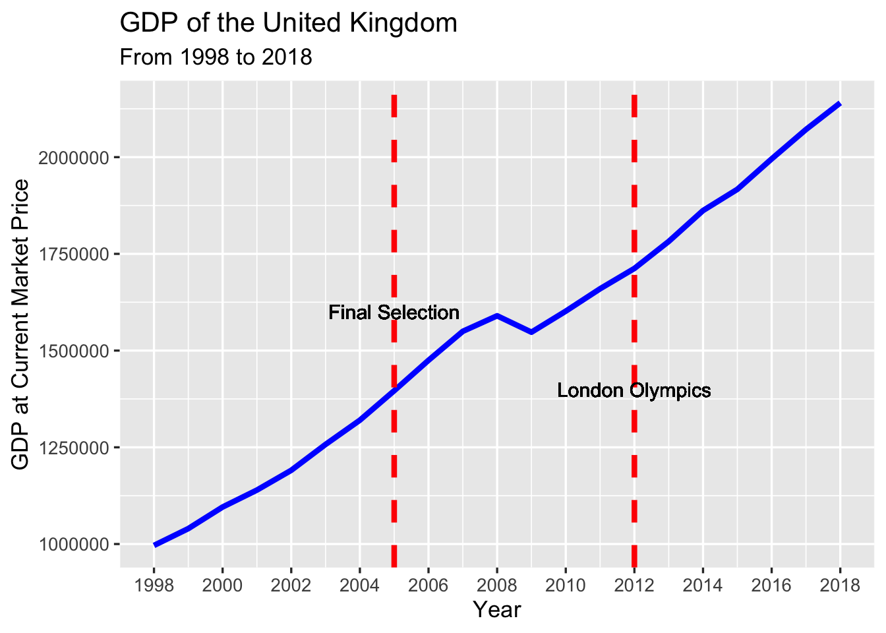

Chapter 3 UK - 2012 London Olympics
Analysis of Regional Economic Impacts of Hosting Olympics on the United Kingdom
Introduction
In this part of our report, we discuss the impact of the 2012 London Olympics on the UK as a whole, as well as its constituent subregions. We focus on UK GDP, weekly pay and international tourism. The 2012 Olympic Games took place at London. London was awarded to host the games in 2005.
Region Description
We divide the UK into 12 regions, with London, which hosted the Olympics, being one of them. The regions consist of the normal division of England as well as separate regions for Scotland, Wales, and Northern Ireland.
These regions are:
1. South West
2. Wales
3. East
4. North East
5. Northern Ireland
6. North West
7. West Midlands
8. East Midlands
9. South East
10. Scotland
11. London
12. Yorkshire and The Humber
Reference: https://en.wikipedia.org/wiki/Regions_of_England
3.1 UK GDP
In order to understand the economic impact of the Olympics on the UK and its subregions, we first detail its total effect on the GDP of the UK in totality by graphing its changes over the time period from 1998 to 2018. This figure depicts the general growth of the nationwide GDP, with the exception of a brief drop during the period of the 2008 Great Recession.

Through the image, we observe a consistent upwards trend from the beginning of the time series, with no particular growth rate change either in the time period following final selection or the Olympic Games.
We further break down the GDP growth into the aforementioned 12 regions and analyze GDP growth by region to assess its potential effects on a smaller scale.
UK Regional GDP

One of the first aspects to note is the dominance of the South East and London regions in GDP size. The other regions are relatively comparable both in total GDP and growth rate, while the two regions mentioned above are both larger and exhibit more rapid growth in the time period pictured. In particular, the graph preliminarily seems to suggest that London received the bulk of the economic benefits of hosting the Olympics as the largest GDP region and its rapid growth observed during the preparation season and continuing afterward.
The following table breaks displays the growth rates of each region in more detail, with darker colors representing more rapid growth. Most notably, London boasted a high growth rate during the intermediate years between selection and the games, while the other regions have far lower maximum growth rates.
UK Regional GDP Increasing Rate from 1999 to 2018
Together, the plots suggest that though there may be a slight difference in regional impact and its affect on GDP, the growth rates are similar enough across all parties that we are unable to statistically verify the significance of this difference.
3.2 UK Weekly Pay
To more deeply understand whether or not the Olympics had any impact on the UK, we examine the changes in the weekly pay of workers in each of our regions of interest over time. We begin this analysis by creating a boxplot for the pay of workers in all of the UK over the years 2002 to 2019. This boxplot will show us general trends in pay as well as whether there are any outliers we need to account for.

This boxplots above lead to two important conclusion:
1) There are no special outliers in pay we have to account for.
2) The median weekly pay of workers seems to grow only slightly over time, leading to an initial conclusion that the 2012 olympics may not have had a significant effect.
We can further analyze this second conclusion by viewing the distribution of pay over time using a Joyplot.
Density Estimation on Weekly Pay

Although this plot does admit some changes in the distribution of weekly pay from 2002 to 2019, it reinforces the conclusion that the 2012 Olympic Games were not the cause of this change. Instead, we conclude through inspection that this shift begins around 2004 and and is nearly complete by 2008. All the years after 2008 appear to have nearly identical distributions, including 2012 and beyond.
The above conclusion can be analyzed on the regional level by plotting similar Joyplots of distribution of pay for each of our regions of interest.

Through inspection, we conclude that these plots as well support the conclusion that the 2012 Olympics had no impact on the distribution of pay in any region. In fact, the near uniformity of the distributions calls into question whether any meaningful regional distinctions among worker pay are to be had in the UK.
From these regional plots, we make three observations:
1. With the sole exception of London, each of the distributions is nearly uni-modal with peaks ranging from 300 to 600 £. That London is the exception in this case provides further evidence that the regional impact of the Olympics on London may be different than other regions.
2. Regardless of the region, we see that while changes do occur in the distribution over time, those changes are well under way before the 2012 Olympics. This leads to the conclusion that the Olympics did not have a large impact on regional pay distribution.
3. With reference to observation 1, the near uniformity of many of the distributions across regions suggests a further conclusion that meaningful regional distinctions in worker pay may not be had, with the exception of London.
Regional Average Weekly Pay
After analyzing regional densities for weekly pay. We calculate the regional average weekly pay to visualize the trend before and after the Olympic year 2012.

The multiple time series plot shows that there is no significant increase in average weekly pay from 2012 to 2014 for all the regions. London seems to increase its average weekly pay starting from 2014. The trends for the 12 regions follow a similar increasing pattern from 2002 to 2019, but the Olympic year does not bring any significant increase in weekly pay for London.
The above plot allows us to conclude by inspection that with the possible exception of London, no meaningful regional impact was had by the Olympics on Average Weekly Pay. We are able to observe that London’s average weekly pay plot appears to follow a flat if not downward trend leading up to and soon after the Olympics and that in 2014 this trend is reversed leading to increased growth. However, we were not able to perform statistical tests to analyze whether this change can be attributed to the Olympics. Again we note the uniformity of the trends in Average Weekly Pay shown by most other regions, reinforcing our preliminary conclusion that regional differences are not very large.
3.3 UK International Tourism
To further examine our theory that no meaningful impact was had by the London 2012 Olympics on the regional level, we can explore another metric of regional and country success: tourism. An initial analysis can be obtained by plotting the total number of tourists.
This plot does show a high degree of variance in the number of tourists over time, especially when we consider seasonality. However, if inspected more closely, it supports that the 2012 Olympics is responsible for the uptick in visitation that occurred post 2008.
We again analyze this conclusion on a regional level, both through the number of visits to each of the regions as well as through data on the spending and number of nights stayed in each region.

The red line in the above plots indicates the London 2012 Olympics. Although we do not see the same constancy as in the regional pay distribution plots, we find that changes after the London 2012 Olympics have already been in progress across all three of these metrics. Because it is difficult to compare regions, especially those with lower metrics, in the above plots, we show individual plots on a per-region level below.
These plots allow for further clarity on the regional breakdown of these tourism indicators. Of note, we do see meaningful regional distinctions among these factors. This is in contrast to the regional breakdown of economic data, which showed almost no distinction among regions. This conclusion makes sense, as certain parts of the UK are more attractive tourist destinations than other parts. Nonetheless, irregardless of which region we explore, none of them seem to show are large change in behavior directly following or as a result of the 2012 Olympics.
3.4 UK Conclusion
From the above observational analysis, we are able to conclude that the Olympics does not have a large impact on the national or regional economic and tourism indicators for the United Kingdom. When broken down by region, we found that the economic data showed a large degree of uniformity, leading to a suggestion that meaningful economic differences cannot be found across regions. The tourism data did show more heterogeneity when broken down by region, however in all indicators measured we did not find that the Olympics produced significant changes for any individual region.